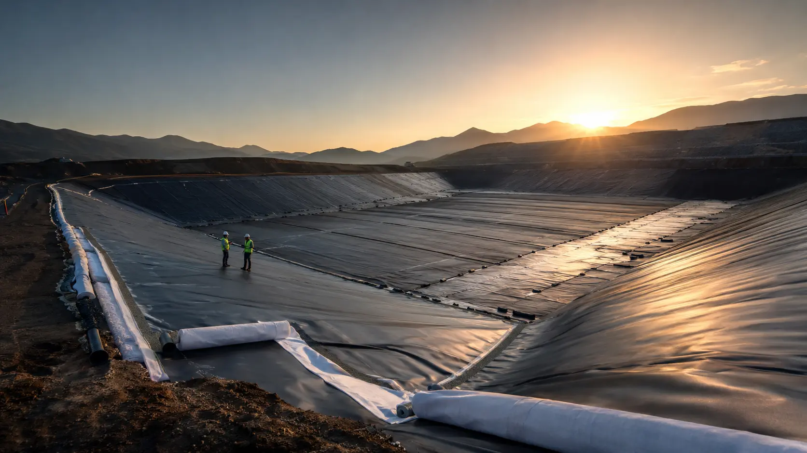
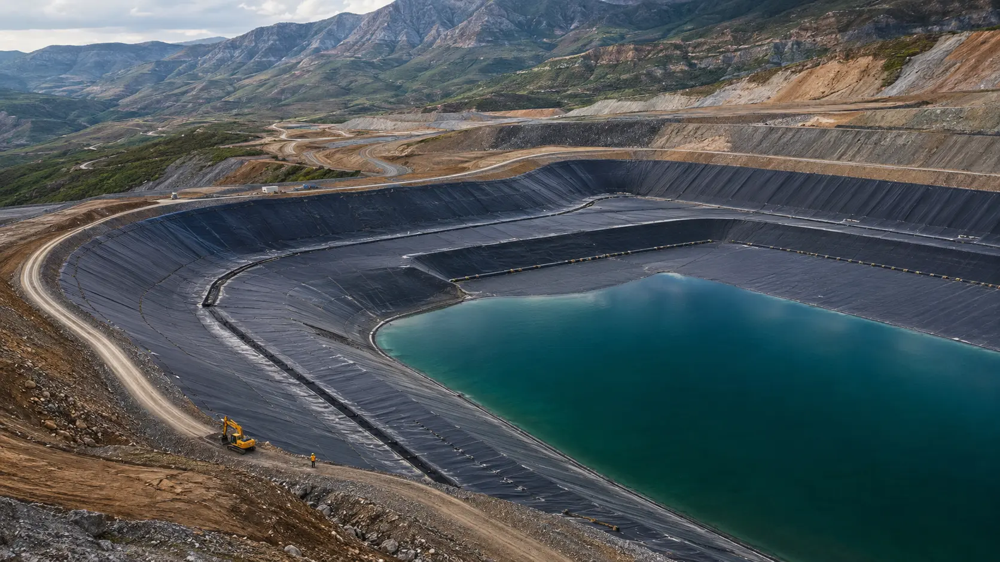
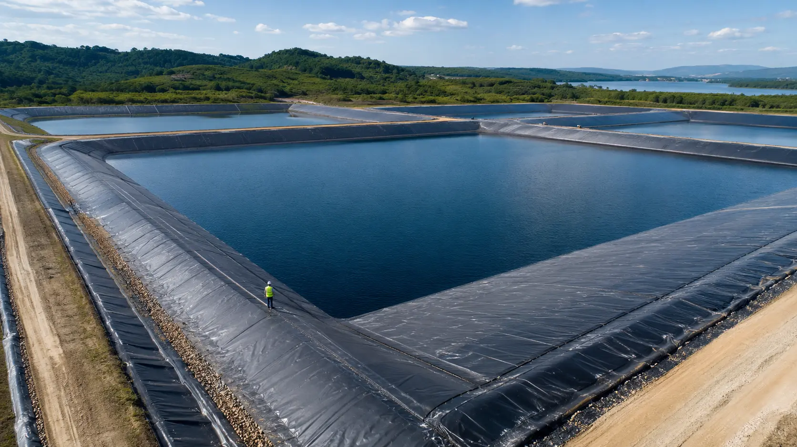

01Environmental
Landfill containment
Barrier, drainage and protection systems engineered around leachate risk.

International engineering digital showroom
Explore how geomembranes, geotextiles and engineered barriers work together to protect land, water and long-term project value.
Production capability
ready for project scale
Maximum geomembrane width
Daily geomembrane output
EVA waterproof sheet line
Years in geosynthetics
Start with the application
We help project teams move from a product list to a coordinated containment system—one that reflects the liquid, substrate, geometry and construction reality on site.
Barrier, drainage and protection systems engineered around leachate risk.

Durable lining systems for chemically demanding, large-scale facilities.

Efficient water retention for reservoirs, ponds and modern aquaculture.
Interactive system explorer
Select a layer to examine its engineering purpose. Then switch the system off to see why isolated products are never enough.
Material portfolio
From the primary barrier to protection, reinforcement and drainage, Xinda coordinates the materials that make the full assembly work.
HDPE · LDPE · EVA · PVC
Needle-punched nonwoven systems
Geomembrane + geotextile
Bentonite mineral barriers
Geogrid · geocell · 3D mesh
Geonet · drainage composites
Why Xinda
Reliable containment comes from a chain of good decisions—from specification and production to roll planning, seams and field protection.
Membranes, geotextiles, composite products and coordinated accessories.
Standard inventory, made-to-order width and project roll planning.
Factory pre-welding and field welding teams available by project.
From question to configuration
Tell us the medium, base condition, geometry and service expectation.
We align material type, thickness, protection and joint strategy.
Stable lines, batch traceability and dimensional checks support consistency.
Roll planning, factory pre-welding and field welding options reduce uncertainty.
Start with your project conditions
Share the application, area, base condition and target service expectation. Our team will help you define the next useful question.